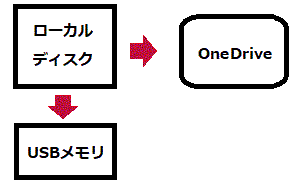

Yaizu ソフトウェア開発メモ

インストーラがユーザードキュメントフォルダにフォルダ／ファイルを配置する際の注意事項
Visual Studio 2008を使用してsetupプロジェクトを作成する際，インストーラがユーザードキュメントフォルダ（ユーザーの個人用データフォルダ） にフォルダまたはファイルの配置を試みると，オペレーティングシステムに依存して以下に示す挙動を示す。
インストーラはインストール時，またはインストールしたプログラムの初回起動時に以下のフォルダ，ファイルの生成を試みる。
- ＜ユーザードキュメントフォルダ＞\StkFw
- ＜ユーザードキュメントフォルダ＞\StkFw\SampleData
- ＜ユーザードキュメントフォルダ＞\StkFw\SampleData\*.* （＜インストール先＞\StkFw\sample内のファイルがコピーされる）
しかし，実際に生成されるかどうかはOSにより異る。
| OS | Administratorsのユーザー（インストールしたユーザー） | Administratorsの他のユーザー | Usersのユーザー | Guestのユーザー |
|---|---|---|---|---|
| Windows 2000 | ◎ | × | ○ | ○ |
| Windows XP | ◎ | × | ○ | ○ |
| Windows Server 2003 | ◎ | × | － | － |
| Windows Vista | ◎ | ○ | ○ | ○ |
| Windows Server 2008 | ◎ | ○ | ○ | ○ |
| Windows 7 | ◎ | ○ | ○ | ○ |
◎：インストール時にフォルダ/ファイルが生成される
○：インストールしたプログラムの初回起動時にフォルダ/ファイルが生成される
×：インストールしたプログラムは起動できるがフォルダ/ファイルは生成されない
－：インストールしたプログラムの初回起動時にエラー（デジタル署名ポリシー違反）が発生し，フォルダ/ファイルが生成されない
上記の例は，インストールしたユーザーのデスクトップ上にインストール元ファイルであるsetup.exe，XXXX.msiを残したままにしたときの挙動である。 インストール直後にsetup.exe，XXXX.msiを削除した場合の挙動を以下に示す。
| OS | Administratorsのユーザー（インストールしたユーザー） | Administratorsの他のユーザー | Usersのユーザー | Guestのユーザー |
|---|---|---|---|---|
| Windows 2000 | ◎ | × | △ | △ |
| Windows XP | ◎ | × | △ | △ |
| Windows Server 2003 | ◎ | × | △ | △ |
| Windows Vista | ◎ | △ | △ | △ |
| Windows Server 2008 | ◎ | △ | △ | △ |
| Windows 7 | ◎ | △ | △ | △ |
◎：インストール時にフォルダ/ファイルが生成される
△：インストールしたプログラムの初回起動時にXXXX.msiの場所の指定を促すメッセージが表示される
×：インストールしたプログラムは起動できるがフォルダ/ファイルは生成されない
メモリリーク検出用デバッグコード
Visual C++を使用したソフトウェア開発において，メモリリークを発生させるコードは気を付けていても作り込まれてしまうもの。
これはC/C++の宿命のようなものであるが，メモリリークの要因は，メモリリーク検出用のデバッグコードを埋め込むことにより，容易に取り除くことができる。
-
メモリリークが疑われるソースコードの先頭行に以下の宣言文を追加する。
#define _CRTDBG_MAP_ALLOC
#include <stdlib.h>
#include <crtdbg.h>
#define new ::new(_NORMAL_BLOCK, __FILE__, __LINE__) -
メモリリークの候補をDUMPする。
OutputDebugString(_T("Dump memory leaks"));
_CrtDumpMemoryLeaks();
Visual C++からデバッグモードでプログラムを起動すると，上記#2のDUMP情報がVisual C++のコンソールに出力される。
出力される情報は下記のとおり。
- メモリ割り当て番号 (中括弧に囲まれた数字)
- ブロックの型 (Normal、Client または CRT)
- 16 進数で表されるメモリの位置
- バイト単位で表されるブロックのサイズ
- 先頭の 16 バイトの内容 (16 進数)
c:\work\github\yaizucomlib\src\commonfunc\stkobject.cpp(716) : {3539} normal block at 0x00AB4CE8, 32 bytes long.
Data: <HM M > 48 4D AB 00 16 00 00 00 90 4D AB 00 00 00 00 00
OutputDebugStringおよび_CrtDumpMemoryLeaksのみでもDUMP情報は出力されるが，前述#defineおよび#includeを挿入することにより，
ソースコードのファイル名とメモリ確保を行った行番号が出力される。
WM_INITDIALOGのプラットフォーム毎の挙動
ダイアログ表示に関するプラットフォーム挙動差異：
DialogBox()を使用してダイアログを作成する。
-
WM_INITDIALOGをハンドルして(INT_PTR)TRUEを返す
Windows XPではダイアログが表示される
Windows 2000でもダイアログが表示される
-
WM_INITDIALOGをハンドルしない
Windows XPではダイアログが表示される
Windows 2000ではダイアログが表示されない
List Control（レポート属性）に関するプラットフォーム挙動差異：
DialogBox()を使用してList Control（レポート属性）付きダイアログを作成する。
-
WM_INITDIALOGでImageList_Create()を呼び出している。
Windows XPではダイアログが表示される
Windows 2000でもダイアログが表示される
-
WM_INITDIALOGでImageList_Create()を呼び出していない。
Windows XPではダイアログが表示される
Windows 2000ではダイアログが表示されない
C++ オーバーライド不可の指定
virtual関数を派生先でオーバーライド不可にすることはC++ではできない。
JAVAではfinal，C#ではsealdを使用することにより，オーバーライド不可にすることができる。
Pimplイディオム
C++でライブラリの開発をしていると，ヘッダファイルにインターフェース以外の実装が含まれるのを回避したいと考えるときがある。
そのような実装部は，呼び出し側のユーザープログラムにとっては，知る必要の無い事項／知っていてはいけない事項であり，これを如何に
暴露させないかはシンプルなインターフェースを提供する上で重要なことである。
Pimplイディオムの実装は色々なやり方があるが，手っ取り早いのは下記の定義をクラスに記述し，実装部をcpp内のImplクラスに押し込むやり方。
private:
class Impl;
Impl* pImpl_;
もとのクラスのコンストラクタでImplインスタンスを生成し，デストラクタでImplインスタンスを消滅させるコードを記述する。
Grafana設定
対象ディストリビューション
CentOS Linux release 7.5.1804 (Core)
ダウンロード
grafanaのダウンロード
wget https://s3-us-west-2.amazonaws.com/grafana-releases/release/grafana-5.1.4-1.x86_64.rpm
grafanaの依存パッケージをダウンロード
yum install grafana-5.1.4-1.x86_64.rpm --downloadonly --downloaddir=/root/grafana-dep
grafana 5.1.4の依存パッケージ:
* fontconfig : fontconfig-2.10.95-11.el7.x86_64.rpm* fontpackages-filesystem : fontpackages-filesystem-1.44-8.el7.noarch.rpm
* libfontenc : libfontenc-1.1.3-3.el7.x86_64.rpm
* lixXfont : libXfibt-1.5.2-1.el7.x86_64.rpm
* stix-fonts : stix-fonts-1.1.0-5.el7.noarch.rpm
* urw-fonts : urw-fonts-2.4-16.el7.noarch.rpm
* xorg-x11-font-utils : xorg-x11-font-utils-7.5-20.el7.x86_64.rpm
influxdbのダウンロード
wget https://dl.influxdata.com/influxdb/releases/influxdb-1.5.4.x86_64.rpm
インストール
grafanaのインストール
rpmコマンドでgrafanaおよび依存パッケージインストールする。
rpm -ivh libXfont-1.5.2-1.el7.x86_64.rpm libfontenc-1.1.3-3.el7.x86_64.rpm
rpm -ivh xorg-x11-font-utils-7.5-20.el7.x86_64.rpm
rpm -ivh fontconfig-2.10.95-11.el7.x86_64.rpm urw-fonts-2.4-16.el7.noarch.rpm fontpackages-filesystem-1.44-8.el7.noarch.rpm stix-fonts-1.1.0-5.el7.noarch.rpm
rpm -ivh grafana-5.1.4-1.x86_64.rpm
influxdbのインストール
rpm -ivh influxdb-1.5.4.x86_64.rpm
依存性を解決するインストール(署名チェックしない)
yum -y localinstall --nogpgcheck ./*.rpm
アンインストール
rpm -e influxdb-1.5.4.x86_64
rpm -e grafana-5.1.4-1.x86_64
rpm -e fontconfig-2.10.95-11.el7.x86_64 urw-fonts-2.4-16.el7.noarch fontpackages-filesystem-1.44-8.el7.noarch stix-fonts-1.1.0-5.el7.noarch
rpm -e xorg-x11-font-utils-7.5-20.el7.x86_64.rpm
rpm -e libXfont-1.5.2-1.el7.x86_64 libfontenc-1.1.3-3.el7.x86_64
ファイアウォールの設定
grafanaのファイアウォールの設定
firewall-cmd --add-port=3000/tcp --permanent
firewall-cmd --reload
influxDBのファイアウォールの設定
firewall-cmd --add-port=8086/tcp --permanent
firewall-cmd --reload
サービスの起動
grafanaの起動
systemctl daemon-reload
systemctl start grafana-server.service
systemctl status grafana-server.service
grafanaの自動起動
systemctl enable grafana-server.service
influxDBの起動
systemctl start influxdb.service
systemctl status influxdb.service
G++ 8の導入とC++17オプション付きコンパイル
filesystemを用いる例。
wget -r -np https://cbs.centos.org/repos/sclo7-devtoolset-8-rh-candidate/x86_64/os/Packages/
yum install *.rpm
scl enable devtoolset-8 bash
g++ --version
g++ aaa.cpp bbb.cpp -std=c++1z -lstdc++fs
開発規模について
開発したソフトウェアの規模の推移を以下にまとめた。
StkFw 1.0.0 (2008.12.19 ﾘﾘｰｽ) 開発規模 : 9,259
| StkAbout | 228 |
| Stk_IP_DLG | 843 |
| StkData | 2,864 |
| StkLib | 2,994 |
| StkThread | 730 |
| StkFw | 1,600 |
StkFw 1.1.0 (2009.12.14 ﾘﾘｰｽ) 開発規模 : 15,382
| StkAbout | 228 |
| Stk_IP_DLG | 954 |
| StkData | 3,195 |
| StkLib | 3,018 |
| StkThread | 743 |
| StkFw | 2,108 |
| LBAadpt | 187 |
| MessageProc | 332 |
| FwAdd/FwDel | 36 |
| VarCon | 1,328 |
| StkProp | 3,253 |
StkFw 1.2.0 (2010.06.28 ﾘﾘｰｽ) 開発規模 : 17,013
| Common/StkAbout | 241 |
| Common/StkData | 3,656 |
| Common/MessageProc | 478 |
| Common/StkThread | 794 |
| Stk_IP_DLG | 996 |
| StkLib | 2,998 |
| StkFw | 7,601 |
| LBAadpt | 213 |
| FwAdd/FwDel | 36 |
StkFw 1.3.0 (2011.04.25 ﾘﾘｰｽ) 開発規模 : 19,893
| Common/StkAbout | 236 |
| Common/StkData | 2,253 |
| Common/StkDataGui | 1,054 |
| Common/MessageProc | 552 |
| Common/StkThread | 822 |
| Stk_IP_DLG | 857 |
| StkLib | 3,018 |
| StkFw | 8,276 |
| LBAadpt(コマンド含む) | 2,789 |
StkFw 1.4.0 (2013.02.27 ﾘﾘｰｽ) 開発規模 : 25,638
| Common/StkAbout | 236 |
| Common/StkData | 2,389 |
| Common/StkDataGui | 1,079 |
| Common/MessageProc | 895 |
| Common/StkThread | 529 |
| Common/StkThreadGui | 614 |
| Common/StkSocket | 706 |
| Stk_IP_DLG | 857 |
| StkLib | 2,916 |
| StkFw | 8,852 |
| LBAadpt(コマンド含む) | 2,789 |
| CmdFreak | 1,367 |
CmdFreak 1.0.0 (2014.02.04 ﾘﾘｰｽ) 開発規模 : 25,814
| Common/StkAbout | 236 |
| Common/StkData | 2,389 |
| Common/StkDataGui | 1,198 |
| Common/MessageProc | 847 |
| Common/StkThread | 529 |
| Common/StkThreadGui | 614 |
| Common/StkSocket | 706 |
| Stk_IP_DLG | 857 |
| StkLib | 2,916 |
| StkFw | 8,852 |
| LBAadpt(コマンド含む) | 2,789 |
| cmdfrksrv | 1,749 |
| bbb | 1,438 |
StkFw 1.5.0 (2015.12.10 ﾘﾘｰｽ) 開発規模 : 26,841
| CommonLib | 6,855 |
| StkFw | 16,128 |
| CmdFreak | 3,858 |
CmdFreak 1.1.0 (2018.01.28 ﾘﾘｰｽ) 開発規模 : 29,183
| CommonLib | 9,520 |
| StkFw | 16,398 |
| CmdFreak | 3,265 |
StkFw 1.6.0 (2018.11.04 ﾘﾘｰｽ) 開発規模 : 31,176
| CommonLib | 9,586 |
| StkFw | 17,734 |
| CmdFreak | 3,856 |
バージョン表記に関する規約
開発ソフトウェアのバージョン表記は以下の様に, メジャーバージョン番号, マイナーバージョン番号, 不良修正番号をピリオド "." で区切った形式とする。
メジャーバージョン番号 = 1
マイナーバージョン番号 = 6
不良修正番号 = 4
- メジャーバージョン番号： 常に1。
- マイナーバージョン番号： エンハンスの度に値を上げる。
- 不良修正番号： 不良のみを修正した場合値を上げる。
ネットワーク環境
各物理PC/仮想PCの役割は以下のとおり。| DIRECTSTAR | 192.168.0.1 | DTI Router |
| BUFFALO Air Station | 192.168.0.2 | 無線ルータ |
| SHINY-pc | 192.168.0.5 | ソフトウェア開発用。ASUSのラップトップPC。 |
| n-win7-c3f9c | 192.168.0.15 | ソフトウェアテスト用 CPU: 1 (x64), Mem: 4,096MB, HDD: 60GB, Network: ブリッジ |
| n-win2008-h7tdv | 192.168.0.16 | ソフトウェアテスト用 CPU: 1 (x64), Mem: 4,096MB, HDD: 50GB, Network: ブリッジ |
| n-win2016-q3rnc | 192.168.0.17 | ソフトウェアテスト用 CPU: 1 (x64), Mem: 4,096MB, HDD: 80GB, Network: ブリッジ |
| DHCPエントリ | 192.168.0.32～192.168.0.63 | Akemi-PC, プリンタ, スマホ |
使用ポート番号
リリースしたソフトウェアやテストコードがデフォルトで使用するポート番号を以下に整理する。| ソフトウェア名称 | IPアドレス | ポート番号 |
|---|---|---|
| CmdFreak 1.0.0 (HTTPサーバ) | - | 8008 |
| CmdFreak 1.0.0 (CmdFreakサービス) | localhost | 2002 |
| CmdFreak 1.1.0 (HTTPサーバ) | - | 80 |
| CmdFreak 1.1.0 (CmdFreakサービス) | localhost | 2002 |
| YaizuSample (HTTPサーバ) | localhost | 80 |
| YaizuSample (REST APIサービス) | localhost | 8081 |
| StkWebAppTest | 127.0.0.1 | 8080, 8081, 8082, 8083 |
| StkSocketTest (IPv4-TCP) | 127.0.0.1 | 2001, 2000～2039, 2100, 2201～2203, 2221～2225, 3000～3039 |
| StkSocketTest (IPv4-UDP) | 127.0.0.1 | 2001, 2002, 2003 |
| StkSocketTest (IPv6-TCP) | ::1 | 2202 |
| StkSocketTest (IPv6-UDP) | ::1 | 2202 |
バックアップ方法
ローカルファイルのバックアップは，下図のように複数のメディアを組み合わせる形で多重にバックアップを行う。
ローカルディスク: Dドライブ
USBメモリ: Fドライブ
OneDrive: C:\Users\Shinya\OneDrive
コンパイラおよび組み込みOSS
コンパイラおよび組み込みOSS一覧は以下のとおり。| Product/Version | Compiler | OSS |
|---|---|---|
| CmdFreak 1.0.0 | Visual Studio 2008 | mongoose 3.7, jQuery 1.9.1, jQuery UI 1.10.3, ParamQuery Grid 1.1.2 |
| StkFw 1.5.0 | Visual Studio 2008 | |
| YaizuSample for CmdFreak 1.1.0 | Visual Studio 2008 | nginx 1.10.3, jQuery 3.2.0 |
| CmdFreak 1.1.0 | Visual Studio 2008 | nginx 1.10.3, jQuery 1.9.1, jQuery UI 1.10.3, ParamQuery Grid 1.1.2 |
| YaizuComLib Web page for StkFw 1.6.0 | Bootstrap 3.3.7, jQuery 3.2.0 | |
| StkFw 1.6.0 | Visual Studio 2017 |
VPS [takeuchi-xxx.com]
開発サーバとしてDebianの後を継ぎ運用開始。株式会社日本システム開発のWinServerと一年契約。| 初期費用 | ￥3,000 |
| ドメイン取得または移転料 | ￥3,500 |
| Lightプラン 12ヶ月分 | ￥21,600 |
| 消費税 | ￥1,405 |
| 合計 | ￥29,505 |
- Administratorのパスワードを変更
- 運用ユーザーtakeuchiの追加
- コントロールパネル - デザイン - フォルダオプションで登録済拡張子を表示するように変更
- サーバーマネージャでIE ESCの構成を変更
- C:\publicに共有フォルダを作成する
- Trac Lightning 3.0.8をインストール, subversion, tracのみインストール
- trac->サービスのインストール
- Trac Lightningのサービスを手動で起動
- "セキュリティが強化されたWindowsファイアウォール"で受信の規則としてポート#80を許可にする
- OS再起動
- OS再起動後Trac Lightningのサービスが自動で起動されていることを確認
- SampleProjectのデフォルトで登録されているadmin, guest, leaderのパスワードを変更
Debianで運用していたsvnおよびtracのプロジェクトをtakeuchi-xxx.comに移管する手順を示す。
移管後のプロジェクト名をBambooProjectとする。
- svnおよびtracにプロジェクトを作成する "create-project.bat BambooProject"
- svnに移管前のプロジェクトのデータをインポートする "svnadmin load C:\TracLight\projects\svn\BambooProject < c:\public\svnbkup.dump"
- Trac Lightningのサービスを停止する
- tracに移管前のプロジェクトのデータを配置する(まるごとコピーする)
- trac.ini(C:\TracLight\projects\trac\BambooProject\conf\trac.ini)のrepository_dirを"C:\TracLight\projects\svn\BambooProject"に変更する
- Trac Lightningのサービスを開始する
- 移行前ver=0.11，移行後ver=0.12のためデータのUpgradeを実行する "trac-admin C:\TracLight\projects\trac\BambooProject upgrade"
- tracとsvnの同期を行う "trac-admin C:\TracLight\projects\trac\BambooProject repository resync "*""
- tracにログインし[管理]-[一般設定]-[基本設定]-[名称]="BambooProject", [URL]="http://www.takeuchi-xxx.com/trac/BambooProject/"に変更
-
tracにログインし[管理]-[一般設定]-[プラグイン]で以下を有効にする
iniadmin 0.2 [全てのコンポーネント]
tracaccountmanager 0.2.1dev [全てのコンポーネント]
tracusermanagerplugin 0.4r5520 [全てのコンポーネント]
-
trac.iniのaccount_managerを変更
[htdigest_realm=trac]
[password_format=htdigest]
[password_file=C:\TracLight\projects/trac.htdigest]
[password_store=HtDigestStore]
- [管理]-[アカウント]-[ユーザ]でユーザーを編集する
- [管理]-[一般設定]-[権限]でアクセス権限を編集する
- サービス停止後，"trac\BambooProject\db"フォルダ以外のフォルダ／ファイルをすべて削除し，"\tarc\SampleProject"からコピーする
-
"trac\BambooProject\conf\trac.ini"を編集する
※重要：trac.iniを編集するときはワードパッドを使用する。
※メモ帳で編集した場合，不正なエラーが発生しTracにログインできなくなる。
- 全ての"SampleProject"の記述を"BambooProject"に変更する
- "tickets.href = /wiki/MyTickets"を"tickets.href = /report"に変更する。
- "complete.label","due_assign.label","due_close.label","parents.label"を変更(英語化)
- Ticket workflowについても変更(英語化)
- サービスを開始する。必要に応じてResyncを実行する。
Tracのテスト管理用プラグインであるTestManagerForTracの導入手順を以下に示す。
testman4trac.1.7.1-Py_2.6-Trac_0.12-1.0.zip を解凍し，下記の順でeggファイルをtracにインストールする。 インストールはtracのGUIから可能。
- TracGenericClass-1.1.5-py2.6.egg
- TracGenericWorkflow-1.0.4-py2.6.egg
- TestManager-1.7.1-py2.6.egg
2012年5月から利用していたVPSの契約を2015年5月で解除。
チケット管理システムをGitHubに移行。
玄人志向 KURO-SHEEVA: ホスト名=Debian
製品名称： KORO-SHEEVA購入日： 2010/10/26
経緯： 上野科学博物館で開催されていた「空と宇宙展」に行った帰りに衝動買いしたもの。 subversionやtracのような開発支援用サーバとして機能させたいと考えていた。
価格： ￥16,800 (T-ZONE PC DIY SHOPにて)

- 型番 KURO-SHEEVA
- JANコード 4988755233545
- ハードウェア仕様
-
MPU：
Marvell Sheeva CPUコア搭載
Kirkwood SoCプロセッサ 88F6281 (1.2GHz)
メインメモリ：512MB/DDR2
NANDフラッシュメモリ：512MB
-
インターフェース
LAN(RJ45/1000BASE-T)x1
USB2.0/1.1(TYPE A)x1
USB1.1(TYPE miniB)x1※
SDスロットx1, eSATAx1
※コンソール用
- 搭載OS Ubuntu 9.04
- (内蔵NANDフラッシュメモリ内にインストール済み)
- 消費電力 最大約11W
- 外形寸法 96.5x110x48.5mm(突起部除く)
-
付属品
USB-miniUSBケーブル
LANケーブル
ACケーブル
- 接続元PCへのUSBドライバのインストール。（USBケーブルを接続→ドライバの場所を指定）
- Tera Termから接続の確認 (ポートレート = 115200)
- passwdコマンドでパスワードの設定
- dpkg-reconfigure tzdataコマンドでタイムゾーンの設定
- dateコマンドで日時の設定
- /etc/network/interfaces の編集によるIPアドレスの設定
- /etc/resolv.conf の編集によるDNSの設定
- apt-get install ftpd でFTPのインストール
- mke2fs /dev/mmcblk0p1 でext2フォーマット
- /etc/fstab の編集によるSDカードの自動マウント (/dev/mmcblk0p1 /media/sdcard ext2 defaults 0 0)
-
/etc/smb.confの[Media]または[global]を編集する。
comment = Media
path = /media/sdcard/public
public = no
guest ok = no
valid users = @takeuchi
security = user
- useraddおよびpdbedit -aを用いてユーザーを追加する。
- sambaの有効化 (/etc/rc.local に /etc/init.d/samba start を追記)
- apt-get install apache2
- apt-get install subversion
- apt-get install libapache2-svn
- chmod 777 /tmp, chmod 777 /var/tmp でsubversionのプロセスが/tmp, /var/tmpに書き込めるようにする
- /etc/apache2/mods-available/dav_svn.conf の編集
- svnadmin create --fs-type fsfs MyNewRepository
- chown -R www-data:www-data MyNewRepository で所有権変更
- apache2ctl restart
- apt-get install trac
- mkdir /media/sdcard/trac
- trac-admin trac initenv
- chown -R www-data:www-data trac で所有権変更
- apt-get install libapache2-mod-python
- htpasswd -c /media/sdcard/trac/htdocs/trac.htpasswd takeuchi によるユーザーの作成
- /etc/apache2/conf.d/trac.conf の新規作成と編集
- trac-adminによるpermissionの設定 "TRAC_ADMIN"
- apache2ctl restart
-
trac-post-commit-hookを/media/sdcard/takeuchi/hooksにコピーする
(http://trac.edgewall.org/browser/branches/0.11-stable/contrib/) - /media/sdcard/takeuchi/hook/post-commit.tmpl を post-commit にコピーし編集する
- chown でスクリプトの所有権をwww-data に変更
- chmod 755 post-commit で実行権限を付与
- svnadmin dump /media/sdcard/takeuchi > /media/sdcard/svnbkup.dump
- trac-admin /media/sdcard/trac hotcopy /media/sdcard/tracbkup
- tar -cvf /media/sdcard/tracbkup.tar /media/sdcard/tracbkup
Debian(KURO-SHEEVA)運用終了。5/13より処分開始。
経緯： 開発用で使用していたが，頻繁に不具合(熱暴走)が発生したため，機能をVPSに移管しKURO-SHEEVAは運用を終了する。
2017年2月頃，不燃ゴミとして滅却処分済。
サブPC: ホスト名=Sublina
サブPCとしてケース, CPU, HDD, メモリ，マザーボードを購入。詳細は下記の構成。ホスト名はSublinaとした。
購入日=2010/10/26。
- CPU: AMD Phenom II X6 1055T
2.8GHz, 3.3GHz(TurboCore)
9.0MB Total Cache - マザーボード: MINIX 6150SE-UC3
NVIDIA GeForce 6150SE
nForce 430MCP -
メモリ: 2GB×2
AMD Socket AM3 95W Max
Dual Channel DDR3 1333/1066/800 MHz - HDD: HDP725032GLA360 320GB
- OS: Windows Server 2008

SublinaのOS入れ替えを実施 (2011/6/1)
OSの入れ替えを実施。NecoのバックアップPCとする。
- OS: Windows 7 Ultimate
Sublinaの運用停止 (2013年頃?)
- 稼働率が低いため，運用を停止し，物置に移動した。
NECのPC: ホスト名=Neco
Necoの購入 (2005/8/??)
秋葉原のLAOXにてPCおよび液晶ディスプレイを購入。ホスト名はNecoとした。
- 型名: NEC ValueOne MT (MT600/2A)
- 本体サイズ: 175（幅）×420（奥行き）×381（高さ）ミリ
- 出荷日: 2005年8月25日
- OS: Microsoft(R) Windows(R) XP Home Edition 日本語版 Service Pack 2
-
CPU: HTテクノロジ インテル(R) Pentium(R) 4プロセッサ 2.80GHz 521
(FSB=800MHz Prescott L2-cache=1MB EMT64) - メモリ: DDR2-533MHz/ 256Mバイト(DDR2 SDRAM PC2-4200 DIMM)×2
- サウンド: ADI社製 AD1981B搭載（不明）
- HDD:
Serial ATA 7200回転／分 160GB -
チップセット:
945G (82945G)
- 最大メモリ容量 4GB (最大大域幅 10.7GB/s)
- デュアル・チャネル DDR2 メモリー
- 1066/800 MHz システムバス
- PCI Express* x16 グラフィックス・ポート
- PCI Express x1 I/O ポート
- 次世代のシリアル ATA (SATA) 3Gb/s
- Hi-Speed USB 2.0 接続
- GMA 950 グラフィックス・コアを内蔵
82801GR (South Bridge)
- I/O コントローラー・ハブ (ICH7R)
-
DVD/CD:
- DVDスーパーマルチドライブ (DVD-RAM/R/RW with DVD+R/RW)
- バッファアンダーランエラー防止機能付
- DVD-R/+R 2層書き込み
- HL-DT-ST DVDRAM_GSA-4165B
- サポートOS:
Windows 98, Windows ME, Windows 2000 Professional, Windows XP Home Edition, Professional, Media Center Edition
- 対応フォーマット:
記録：DVD-RAM, DVD-R/RW, DVD+R (SL, DL)/RW, CD-R/RW
再生：DVD-ROM, DVD-RAM, DVD-R, DVD-RW, DVD+R (SL, DL), DVD+RW; CD-R, CD-RW, CD-ROM, CD-ROM XA,
CD-DA, CD-I, CD-Extra, CD-Text, Photo CD, Video CD
---以下補足---
標準CD-ROM関連 [読込倍速] DVD-RAM最大5倍速、DVD最大16倍速、CD最大40倍速
標準CD-ROM関連 [書込倍速] DVD-RAM最大5倍速、DVD-R(1層)/+R(1層)最大16倍速、DVD-R(2層)/+R(2層)最大4倍速、DVD-RW最大6倍速、DVD+RW最大8倍速、CD-R最大40倍速、CD-RW最大10倍速
- BIOS:
American Megatrends, Inc. v.02.58 - マザーボード:
microATX MSI製 MS-7186

Necoのメモリを拡張(メモリの入れ替え)を実施 (2008/1/1)
-
メモリ:
PC533 CL4 DDR2 1GB (Windows XP Pro SP2 DSP版)
PC533 CL4 DDR2 1GB (Windows XP Pro SP2 DSP版)
PC667 DDR2 512MB (Windows Vista Business DSP版)
PC667 DDR2 512MB (Windows Vista Business DSP版)
NecoのHDDを拡張(HDDの入れ替え)を実施 (2009/1/1)
-
HDD: HDP725032GLA360 (容量:320GB,回転数:7200rpm,キャッシュ:16MB,I/F:Serial-ATA300)
(2008/5/5購入, \6300)
Necoのマザーボード/CPU/メモリを拡張 (2011/6/1)
下記の構成に変更- CPU: Intel Core2Quad Q6600
クロック：2.4GHz
Ｌ２キャッシュ：8MB
ＦＳＢクロック：1066MHz -
マザーボード: Intel Desktop Board Classic Series DG31PR
LGA775 soket for Intel Core2Quad, Core2Duo, Pentium Dual-Code, Celeron400
Intel G31 Express Chipset
Realtek ALC888 audio codec
Graphics Media Accelerator X3100
DDR2 800 / 667 SDRAM (Max 4GB)
- メモリ: Dual DDR2-800 KINGBOX 2GB×2
- HDD: Hitachi HDS721050CLA362 500GB
- サウンドカード: Sound Blaster 5.1 VX (PCI)
- OS: Windows 7 Ultimate
Necoに搭載のMBのマニュアル：
Intel製マザーボード DG31PRのマニュアル・その他を処分した。念のためマザーボードのマニュアル(一部)の写真を撮って残しておくことに。

Neco購入時のMBは，2017年2月頃，不燃ゴミとして滅却処分済。

購入したときのHDDの増設の実施 (2013/6/8)
-
(Serial ATA 7200回転／分 160GB)
重要ファイルのバックアップ／スナップショット格納先として使用予定。
NECOの運用停止 (2015/6/13)
-
2015年6月，ASUSのノートPCを購入したことにともない，NECOの運用を停止。
物置にて廃棄待ちの状態とした。
- PCケース/電源については，2005年から概ね10年間の運用。マザーボードについては2011年にリプレースを実施して以降4年間の運用。
運用再開 (2016/12/26)
後述するASUSのノートPCの障害のため，2016年12月26日からNECOの運用を再開。物理マシンにインストールするソフトウェアの見直しを実施。以下インストール済ソフトウェア一覧。
- Canon MG6130 プリンタドライバ
- Creative Sound Blasterドライバ
- Microsoft Office 2010
- Adobe Reader 最新版
- Adobe Flash Player 最新版
- Visual Studio 2008 Professional Edition (with patch "VS90-KB948127.exe")
- wkhtmltopdf 0.12.0.3
- PDFtk Server 2.02
- 7-Zip 9.20
- Line Counter 1.4
- SourceTree 最新版
- GIMP 2.8
- Microsoft Security Essentials
- FFFTP 1.98g
- e frontier Shade 13
- VMware Player 最新版
- PIXELA VideoBrowser + 最新パッチ
- Abyssmedia Wave Editor 3.3.5.1
- Firefox 最新版
2回目の運用停止 (2017/3/25)
SHINYA-PCの復旧に伴い，NECOの運用を再度停止した。ASUSのノートPC: ホスト名=SHINYA-PC
SHINYA-PC購入 (2015/6/13)
NECOの性能が近年のソフトウェア開発環境についていけなくなったため，NECOの後釜として購入 (2015/6/13)。
-
ASUS X751L
CPU: Intel Core i7-5500U, Up to 3.0GHz (2 Cores, 4 Threads)
Memory: 8GB
HDD: 1TB
- ソフトウェア開発のメインマシンとして活用する。
- 2015/6/20にNECOからの移行作業完了。
- 既存のノートPC"AKEMI-PC"と対比させるため，マシン名を"SHINYA-PC"とした。
- 2015/8/15にWindows 10へのアップグレードを実施。

物理マシンにインストールするソフトウェアは下記のとおり。
- VMware Player 最新版
- Wave Editor 3.3.4.0
- PIXELA VideoBrowser + 最新パッチ
- Canon MG6130 プリンタドライバ
- Microsoft Office 2010
- Adobe Reader 最新版
- Adobe Flash Player 最新版
- Visual Studio 2008 Professional Edition (with patch "VS90-KB948127.exe")
- wkhtmltopdf 0.12.0.3
- PDFtk Server 2.02
- 7-Zip 9.20
- Line Counter 1.4
- SourceTree 1.6
- GIMP 2.8
- Ineternet Explorer 最新版
- Firefox ESR 最新版
- Chrome 最新版
- Microsoft Security Essentials
- FFFTP 1.98g
SHINYA-PC故障 (2016/12/20)
2016年12月17日あたりから，Windows 10のディスクアクセス負荷が100%を維持し，Windows 10の操作が異常に遅くなる現象が発生。
数日後の2016年12月20日には，ノートPCの電源投入後にBIOSの設定画面が強制表示され，Windows 10の起動が不可になる現象に置き換わる。
12月22日にメーカーであるASUSのカスタマーサービスに問い合わせたところ，ハードウェア(HDD)の問題の可能性が高い旨回答あり。
取り急ぎデータの復旧を目的にヨドバシカメラのサービスに依頼したところ，データ復旧センター(?)から電話があり，HDD磁気ヘッドの故障であり，
復旧には\148,000の費用が掛かるとのこと。
費用が高額であることからデータ復旧は諦めることに。メインPCもASUSのノートPCから再びNECOに変更することにした。
故障したHDDは，2018年3月末に不燃ごみとして滅却済。
SHINYA-PC復旧 (2017/3/25)
メインPCをNECOに切り替えたものの，処理性能が遅く，頻繁にスタンが発生。ストレスが大きいため，メインPCをSHINYA-PCに戻すべく，2017年3月中旬に修理を依頼し3月25日に復旧した。
- 修理費用:￥64,425
- バックアップ対策として購入したUSBメモリ(32GB):￥2,780
- バックアップ対策として購入したSDカード(64GB):￥11,640
Windows 8.1の初期設定後，Windows 10に更新する。 Windows 10に更新後，初期状態から不要なソフトウェアを削除する。削除するソフトウェアは次のとおり。
|
Kingsoft Office, デジタルアーツ iフィルター, Foxit PhantomPDF, WebStorage, WebStorage(WSA), Skype, Skype(WSA),
Candy Crush Soda Saga(WSA), Facebook(WSA), Flipboard(WSA), Keeper Password Manager(WSA), Line(WSA), Minecraft(WSA),
Music Maker Jam(WSA), NAVITIME(WSA), Netflix(WSA), Phototastic Collage(WSA), TripAdvisor Hotels Flights Restaurants(WSA),
Twitter(WSA), Zinio Reader(WSA), マーチオブエンパイア(WSA)
※WSA : Windowsストアアプリ ※McAfeeのセキュリティソフトウェアは，Windows 10に更新したときに自動的に削除される。 |
SHINYA-PCにインストールするソフトウェアは次のとおり。
- Canon MG6130 プリンタドライバ
- Microsoft Office 2010
- Visual Studio 2017 Community
- InstallerProjects (Visual Studio 2017 Community add-on)
- wkhtmltopdf 0.12.0.3
- PDFtk Server 2.02
- 7-Zip 9.20
- Line Counter 1.4
- SourceTree 1.10
- WinMerge 2.14
- GIMP 2.8
- WinSCP 5.13.4
- RLogin 2.23.8
- VMware Player 最新版
- Firefox 最新版
- Chrome 最新版
- e frontier Shade 13
- PIXELA VideoBrowser + 最新版アップデート
関連リンク
Donec id elit non mi porta gravida at eget metus. Fusce dapibus, tellus ac cursus commodo, tortor mauris condimentum nibh, ut fermentum massa justo sit amet risus. Etiam porta sem malesuada magna mollis euismod. Donec sed odio dui.
あいうえおかきくけこあいうえおかきくけこあいうえおかきくけこ
あいうえおかきくけこあいうえおかきくけこあいうえおかきくけこ
あいうえおかきくけこあいうえおかきくけこあいうえおかきくけこ
あいうえおかきくけこあいうえおかきくけこあいうえおかきくけこ
あいうえおかきくけこあいうえおかきくけこあいうえおかきくけこ
あいうえおかきくけこあいうえおかきくけこあいうえおかきくけこ
あいうえおかきくけこあいうえおかきくけこあいうえおかきくけこ
あいうえおかきくけこあいうえおかきくけこあいうえおかきくけこ
あいうえおかきくけこあいうえおかきくけこあいうえおかきくけこ
あいうえおかきくけこあいうえおかきくけこあいうえおかきくけこ
あいうえおかきくけこあいうえおかきくけこあいうえおかきくけこ